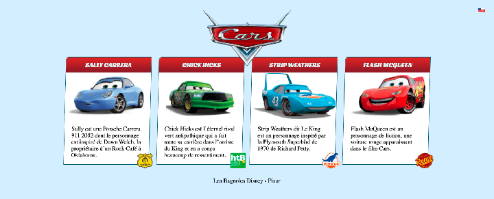

Pour cet exercice vous et votre coéquipier devez créer un microsite permettant de présenter les protagonistes du film les Bagnoles.
Votre coéquipier a conçu un mockup HTML sur CodePen, ainsi que le thème WordPress du site. Il compte maintenant sur vous pour le rendre dynamique dans WordPress.
Aperçu du résultat 👇
Médias 🖼️
{"voitures":{"name":"voitures","label":"Voitures","singular_label":"voiture","description":"","public":"true","publicly_queryable":"true","show_ui":"true","show_in_nav_menus":"true","delete_with_user":"false","show_in_rest":"true","rest_base":"","rest_controller_class":"","has_archive":"false","has_archive_string":"","exclude_from_search":"false","capability_type":"post","hierarchical":"false","rewrite":"true","rewrite_slug":"","rewrite_withfront":"true","query_var":"true","query_var_slug":"","menu_position":"","show_in_menu":"true","show_in_menu_string":"","menu_icon":"dashicons-car","supports":["title","editor","thumbnail"],"taxonomies":[],"labels":{"menu_name":"Voitures","all_items":"Toutes les Voitures","add_new":"Ajouter","add_new_item":"Ajouter une voiture","edit_item":"Modifier une voiture","new_item":"Nouvelle voiture","view_item":"Voir la voiture","view_items":"Voir les voitures","search_items":"Chercher les voitures","not_found":"Aucune voiture trouv\u00e9e","not_found_in_trash":"Aucune voiture trouv\u00e9e dans la corbeille","parent":"Parent voiture:","featured_image":"Featured image for this voiture","set_featured_image":"Set featured image for this voiture","remove_featured_image":"Remove featured image for this voiture","use_featured_image":"Use as featured image for this voiture","archives":"voiture archives","insert_into_item":"Insert into voiture","uploaded_to_this_item":"Upload to this voiture","filter_items_list":"Filter Voitures list","items_list_navigation":"Voitures list navigation","items_list":"Voitures list","attributes":"Voitures attributes","name_admin_bar":"voiture","item_published":"voiture published","item_published_privately":"voiture published privately.","item_reverted_to_draft":"voiture reverted to draft.","item_scheduled":"voiture scheduled","item_updated":"voiture updated.","parent_item_colon":"Parent voiture:"},"custom_supports":""}}
Champs avancés personnalisés
ACF - Advanced Custom Fields
Posts personnalisés
Collections de types de publications
Migration de données
Migrer les données d'un site WordPress vers un autre
WP-Query
Requête pour récupérer le coontenu des posts et pages